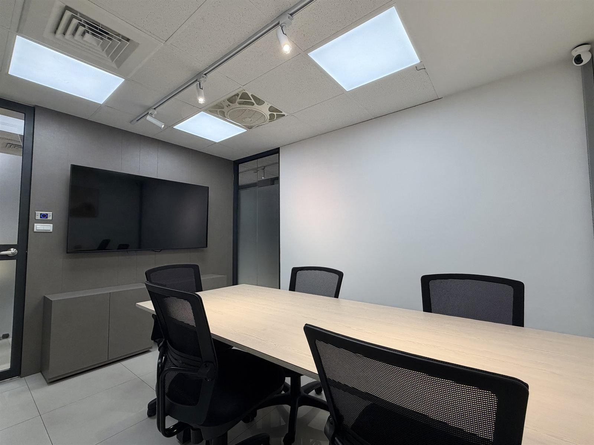

Quick answer: Meeting rooms at both Morning Stars locations cost NT$400 per hour (about US$13). Minimum booking 1 hour, maximum 3 hours per session. Open to the public — you do not need to be a tenant. English-speaking assistance available via LINE.
🕐 Off-peak offer: Weekdays before 12:00 (both locations) and 18:00–21:00 at the World Trade branch — only NT$300 per hour. An off-peak package (10 hours, NT$2,800, prepaid, valid 3 months) is also available on request. Rooms are for business and adult activities only; not available for children's classes or childcare use.
A well-located room you can rent by the hour, right in Taipei's Xinyi business district.
Whether you are pitching to a client, running a team meeting, joining a video call, interviewing candidates or hosting a small workshop, our meeting rooms give you a quiet and professional setting. Both locations sit on Keelung Road in Xinyi District, within walking distance of Taipei 101 / World Trade Center MRT and Liuzhangli MRT, so visitors find you easily.
Ideal for
- Client meetings, pitches and business presentations
- Startup team discussions and project sprints
- Job interviews, training sessions and small workshops
- Video conferences, online streaming and recording
Two Locations

Xinyi Branch
10F, No. 145, Sec. 2, Keelung Rd., Xinyi District, Taipei. A 6-minute walk from Liuzhangli MRT Station. Open weekdays 10:00–18:00 (the building is closed evenings, weekends and public holidays).

WTC Branch
4F, No. 398, Sec. 1, Keelung Rd., Xinyi District, Taipei. A 5-minute walk from Taipei 101 / World Trade Center MRT Station. Open daily 09:00–21:00, with 24-hour building access.
Rates & Booking
NT$400 per hour, billed by the hour — no membership required.
- Rate: NT$400 per hour (approx. US$13), both locations
- Minimum / maximum: 1 hour minimum, 3 hours per session
- Who can book: anyone — visitors and non-tenants are welcome
- Payment: for non-tenants, your booking is confirmed once payment is received. Once confirmed, bookings cannot be cancelled.
- Tenants: registered-address clients receive 6 free hours per month; private office tenants use meeting rooms free of charge
To book, use the online booking calendar on our Chinese booking page, or simply message us — we are happy to arrange everything in English.
Facilities & Services
- High-speed Wi-Fi and independent air conditioning
- Multifunction printer — printing, copying and scanning
- Complimentary coffee, tea and filtered water
- Reception support for greeting your visitors
- Flexible use across both locations
Is an hourly meeting room right for you?
Short, formal, quiet occasions
Client presentations, consulting sessions, interviews, training and project discussions all work well in an hourly meeting room.
Everyday office work
If you need a desk every day, long working hours or a base for your team, a private office is a better fit. If you only need a business address, see virtual office & company registration.
Frequently Asked Questions
How do I book a meeting room?
Can non-tenants rent a meeting room?
How much does it cost?
Do you have English-speaking staff?
How do I get there?
Can I use the meeting room as a long-term office?
Book a meeting room in Taipei Xinyi
Pick a time slot online, or contact us directly — we are happy to help in English.